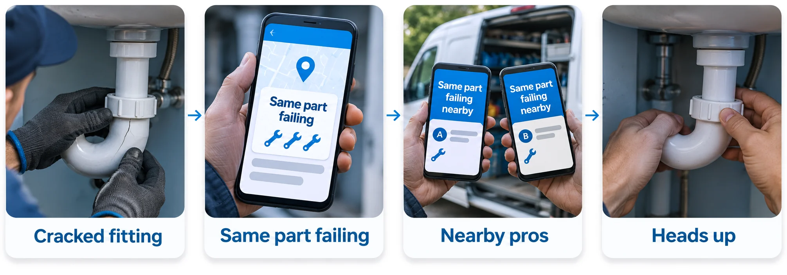
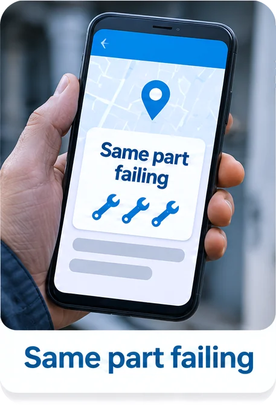
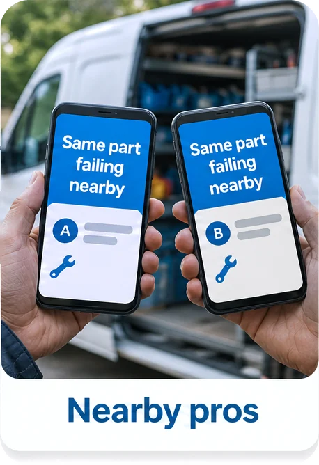

Pros Helping Pros






- Problem
- I work alone, with no one to lend a tool, vouch for my skills or take my customers when I retire.
- Who has it
- Solo providers inside a trusted local network.
- Nearest evidence
- No post found yet. Nearest: PHCC: trade workforce nearing retirement with a limited pipeline of younger workers, 2026-01-12